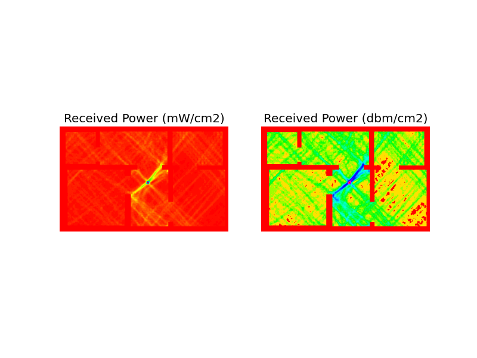
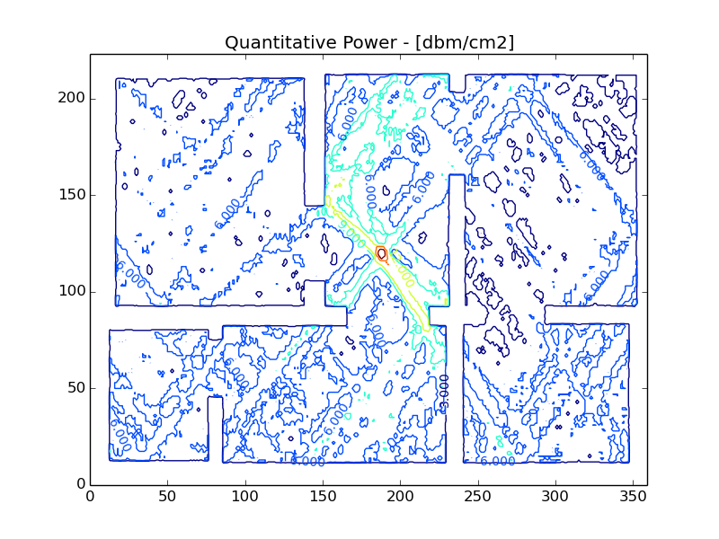

EM wave simulator
Introduction and Use cases
Patricio Villar
Motivation
- Site surveys require planning and resource allocation ahead of time, even for the simplest propagation footprint.
- Avoiding a site survey might end up in coverage holes (bad source distribution) or hidden interference sources (rogue EM sources), which lead to bad user experience.
- Site surveys determine required hardware at the design stage, so it's a mandatory task before procurement.
How do we simulate a EM standing wave field?
Take Maxwell's equations in the presence of nonmagnetic matter, and the constitutive relations as follows:
\begin{eqnarray} \nabla \cdot \mathbf{D} &=& 0 \\ \nabla \cdot \mathbf{B} &=& 0 \\ \nabla \times \mathbf{E} &=& -\frac{\partial\mathbf{B}}{\partial t} \label{eqn:faraday} \\ \nabla \times \mathbf{H} &=& \mathbf{J} + \frac{\partial\mathbf{D}}{\partial t} \\ \mathbf{D} &=& \epsilon_0\epsilon_r\mathbf{D} \\ \mathbf{H} &=& \frac{1}{\mu_0}\mathbf{B} \end{eqnarray}
How do we simulate a EM standing wave field? Cont'ed
Substituting everything in for Eq.:
\(\nabla \times \mathbf{E} &=& -\frac{\partial\mathbf{B}}{\partial t} \label{eqn:faraday}\)
and assuming that:
\(\partial/\partial t \rightarrow i\omega\)
How do we simulate a EM standing wave field? Cont'ed
We get the following:
\[ \begin{equation} \left(\nabla^2 + n^2k0^2\right)\mathbf{E} + \nabla\left(\frac{1}{n^2}\left(\mathbf{E}\cdot\nabla n^2 \right) \right) = \mu_0i\omega_0\mathbf{J} \end{equation} \]
where \(n(x,y) = \sqrt{\epsilon_r}\) is the refractive index and \((\omega_0, k_0)\) are the frequency and vacuum wavevector of the radiation, related by \(\omega_0 = ck_0\). In the presence of matter, the radiation field keeps the same frequency but the wavevector changes to \(k(x,y) = nk_0\), causing refraction, reflection etc.
Application details
- A floor map is required to start the simulation.
- The floor map should be color-coded, in order to differentiate materials (and therefore their respective refractive index) - air, concrete, wooden walls are valid examples.
- Algorithm complexity is m x n, so ~ to wave resolution.

Application output: Qualitative
- This plot can be used as a rough aproximation for AP placement:

Application output: Quantitative
- This contour plot can be used to quantify coverage holes size and impact.

Future Enhancements:
- Multiple AP capability. (algorithm complexity increases to N x m x n)
- Multi-Threading and Grid support.
- Support for directional and quad antenas.
- GUI interface with Tk.
Biblio:
- Computational Electromagnetics - Rylender, Bondenson, Ingelstrom.
- Computational Electrodynamics: The FDTD method - A. Taflove
- Computational Electromagnetics for RF and Microwave Engineering - D. Davidson.